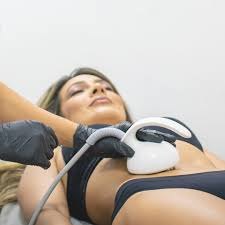

Tratamientos Corporales
Luz Pulsada IPL
La IPL emite una banda ancha de luz que permite tratar varios objetivos a la vez, manchas pigmentadas, venitas o textura cutánea rugosa y así mejorar globalmente la calidad de la piel al estimular la formación de colágeno. La energía de la luz actúa en las capas más profundas para mejorar gradualmente la tonalidad y textura de la piel, eliminar las manchas, rojeces, poros dilatados, arrugas finas y dar luminosidad. El tratamiento se inicia con la piel perfectamente limpia, sin maquillaje ni cremas. Se realiza utilizando un gel frío sobre la zona que permite la transmisión de la energía de la luz y un sistema de enfriamiento que protege las capas más superficiales de la piel. En función del tamaño de la zona a tratar el procedimiento puede durar desde 30 minutos hasta una hora. Los resultados son evidentes desde la primera sesión. Se necesitan entre 3 y 5 sesiones.
Hilos
Los efectos de los hilos de PDO suelen durar entre uno y dos años. La polidioxanona es un material reabsorbible y totalmente compatible, empleado en cirugía cardíaca, ya que ayuda a la cohesión de las células. Su aplicación es rápida, la sesión no suele durar más de 30 a 60 minutos. Estos productos son invisibles e imperceptibles al tacto. Para aplicarlos solo basta una crema anestésica y no producen alergias ni rechazo de ningún tipo. Se los conoce como hilos mágicos porque el material del que están fabricados es capaz de formar un tejido de soporte de forma natural al producir colágeno y fibroblastos alrededor del hilo insertado que tensan y redensifican la piel.
Mesoterapia
La mesoterapia es una técnica estética que se basa en la aplicación de microinyecciones con sustancias que combaten la celulitis, la grasa localizada, las arrugas y la flacidez, que mejora la calidad y el aspecto de la piel. Las inyecciones son aplicadas a nivel superficial, intradérmico, a unos 3 ó 4 mm de profundidad máxima exactamente en la zona a tratar. Las agujas empleadas son las denominadas ‘agujas de lebel’, de aproximadamente unos 4 mm de longitud, que no suelen ser dolorosas debido a su tamaño reducido y a que se aplica muy poca medicación. Cada sesión tiene una duración de aproximadamente 15 minutos. El número de sesiones necesarias se acordará con el especialista en función de la zona a tratar, pero normalmente se necesitan de cuatro a 10 sesiones.
Fosfatidilcolina
El tratamiento consiste en una serie de sesiones durante las que se aplican inyecciones de fosfatidilcolina, un extracto derivado de la lecitina de soja que forma parte estructural de membranas celulares de nuestro cuerpo y no produce reacciones alérgicas, ya que el organismo no la reconoce como extraña. Las indicaciones para el uso estético de la fosfatidilcolina son limitadas y se restringen a pequeños depósitos de adiposidad localizada, en pacientes con peso ideal o con sobrepeso leve, y es conveniente complementar el tratamiento con dieta y actividad fisica. La técnica de aplicación es la infiltración subcutánea mediante la cual la sustancia es inyectada directamente en la grasa. Al penetrar en el tejido adiposo, la fosfatidilcolina interactúa en la membrana celular, produciendo orificios en ella con la consecuente destrucción del tejido graso sólido tratado, que una vez disuelto se vuelve más soluble. Esto permite que luego, el mismo organismo la absorba y la elimine en forma natural en pequeñas cantidades por las deposiciones y especialmente a través de la orina.
Depilación Definitiva
Este tipo de depilación conocida como Luz Pulsada, es un método que promueve la producción de colágeno en la piel, estimula el poro y reduce la aparición progresiva del vello. Es eficaz tanto en hombres como en mujeres. La luz pulsada intensa es un tipo de tecnología que utiliza luz policromática (de varios colores) para eliminar la raíz de los vellos. Su principal diferencia con la depilación láser, es que ésta aplica un sistema de luz monocromática (de un solo color). Ahora bien, conozcamos un poco más sobre los beneficios de la depilación definitiva IPL.

Mesoterapia Capilar
En los tratamientos para el pelo, la mesoterapia se aplica en las zonas calvas del cuero cabelludo del paciente y/o en todo el cuero cabelludo para tratar la caída del cabello y la alopecia La composición de la mesoterapia capilar se individualiza según la causa de la alopecia del paciente. Así tenemos: Reguladores hormonales de la enzima reductasa en la alopecia androgenética. Vasodilatadores que aumentan el flujo sanguíneo y favorecen el desarrollo del folículo piloso estimulando el crecimiento del pelo. Oligoelementos que favorecen la producción de factores de crecimiento y contrarrestan el estrés oxidativo. Regeneradores del epitelio: son vitaminas que mejoran el metabolismo del folículo y fortalecen el cabello.
Radiofrecuencia
La radiofrecuencia es un tratamiento de lipoescultura no invasivo. Mediante la emisión de ondas de radiofrecuienca unipoplar de ondas electromagnéticas de alta potencia provocan una rápida oscilación y fricción de las moléculas de agua, calentando gradualmente las capas inferiores de la piel y disolviendo los adipositos.